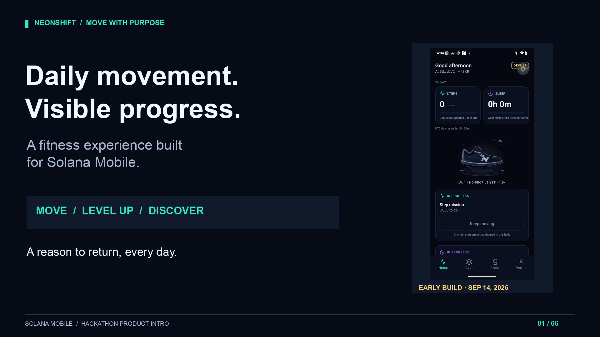
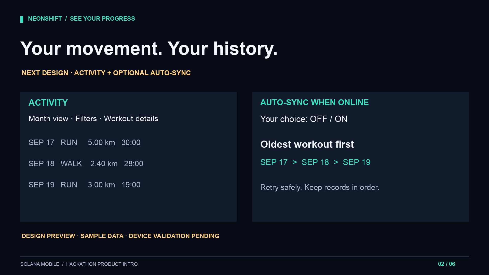
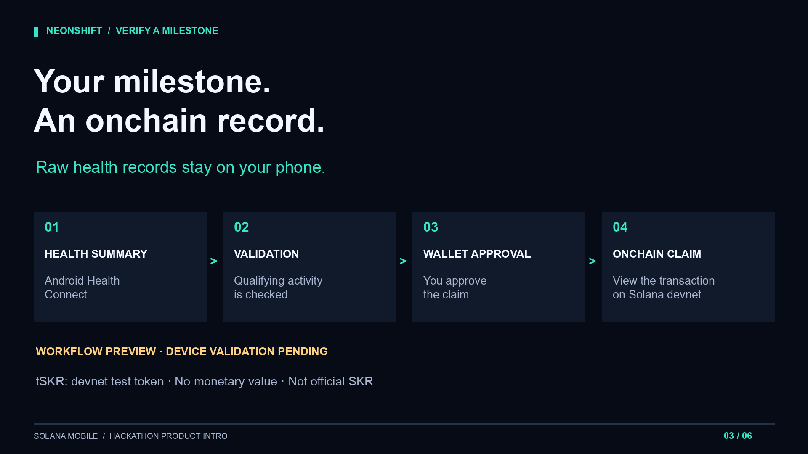
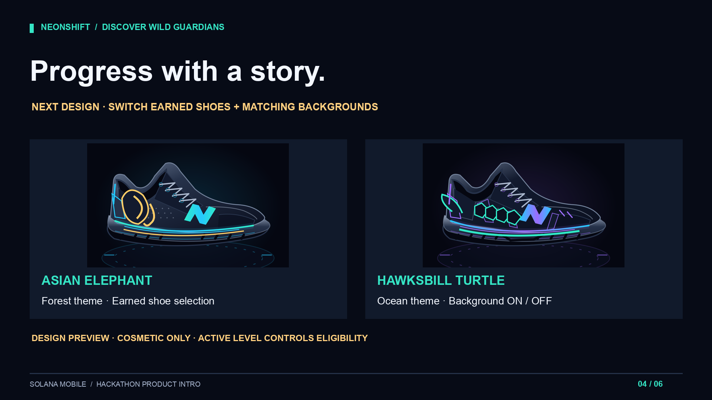
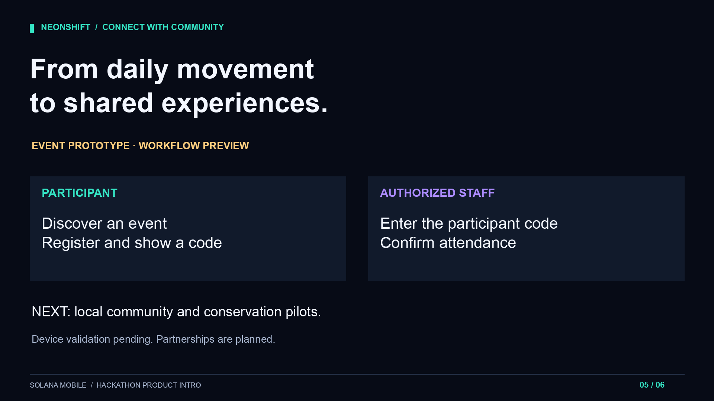
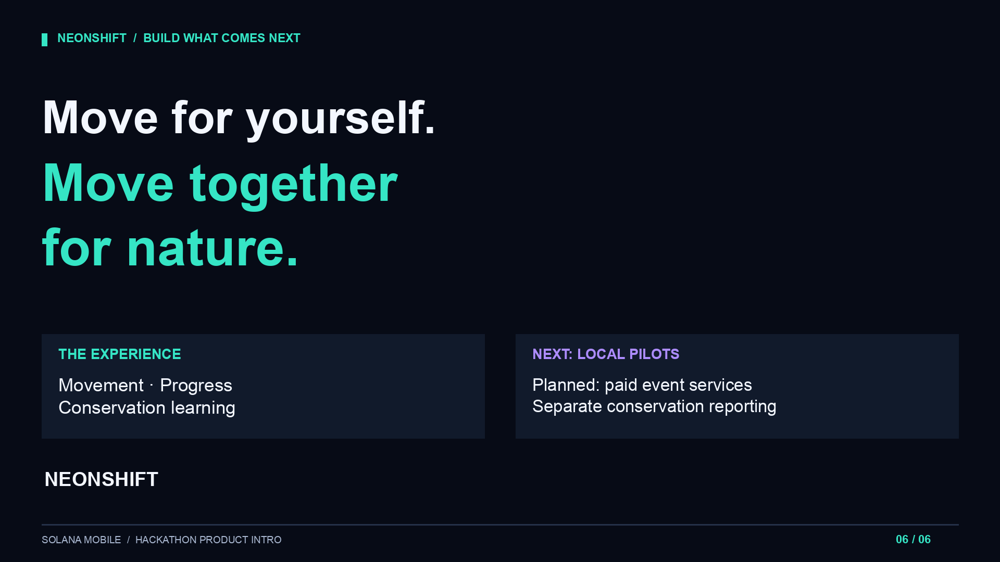

01 / 0:00–0:18 — Move with purpose

02 / 0:18–0:43 — See your progress

03 / 0:43–1:29 — Verify a milestone

04 / 1:29–2:03 — Discover Wild Guardians

05 / 2:03–2:29 — Connect with community

06 / 2:29–2:50 — Build what comes next